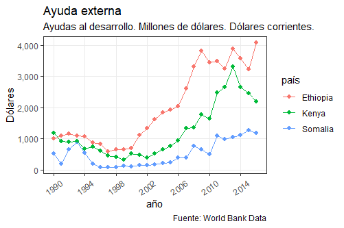

¿FUE BUENA LA ANARQUÍA?
Con estos ocho indicadores intentaremos entender cómo evolucióno la vida en esta zona del cuerno de África.
Haz click en ellos para ampliarlos


Somalia estuvo sin gobierno desde la caída del dictador Siad Barre el 26 de Enero de 1991 hasta la entrada de la ONU en 2015. ¿Qué consecuencias podemos extraer de 20 años de inestabilidad?
Después de la caída de Barre, los 90 se caracterizaron por continuas disputas entre los Señores de la Guerra y milicias de diferentes clanes. Esto llevo a un hambre generalizado, y la ONU y EEUU intervinieron antes de que fuese a peor. En 2006 la Unión de Tribunales Islámicos tomó el control de la capital, Mogadishu. Entonces Etiopía, país vecino, decidió invadir el país para anular a los islamistas, con el apoyo de EEUU, pero nunca llegó a tomar el control total, reproduciéndose una y otra vez continuas batallas en las calles. Más de un millón y medio de personas del sur del país, especialmente de zonas cercanas a la capital, huyeron como refugiados a otros países [poner gráfico de refugiados en otros países Fuente: UNHCR 2009.
Principales ciudades de Somalia
El norte, en cambio, ha tenido una relativa paz, especialmente la zona que antes era británica, Somaliland. Aunque su independencia no es internacionalmente reconocida, en 2010 tuvieron sus primeras elecciones y transferencia pacífica de poder, algo raro en África. Al lado de Somalia tenemos la provincia de Puntland, que si bien no quiere la independencia, está tomada por piratas, que han sido conocidos por secuestrar y extorsionar barcos que pasaban a oriente medio.
A pesar de todo esto, y aunque parezca increíble, el nivel de vida ha ido aumentando lentamente. Es verdad que Somalia sigue siendo uno de los países más pobres de África, pero su población se las ha ingeniado para sobrevivir sin un Estado. El PIB de Somalia y la esperanza de vida han crecido de manera sostenida en estos últimos veinte años, y su gente supo frenar el avance de epidemias como el sida, cosa que países vecinos, con sus Estados, no supieron hacer frente. Esta mejora, en parte, también se debe a las ayudas prestadas por agencias internacionales. [añadir gráfico de ayudas de comida Fueten WFP 2009]
Sin nadie que aplique la ley, y con escasas opciones de vida, muchos jóvenes somalíes han decidido volverse piradas, ganando varios millones de dólare por cada barco secuestrado. Distintos países y entidades internacionales han enviado barcos patrulla para evitar dichos asaltos, pero los piratas somalíes han respondido ampliando sus fuerzas y su territorio a saquear, asaltando barcos más cerca de India que del cuerno de África [poner gráfico sobre asaltos Fuente IMB]
Principales ciudades de Somalia
Con estos ocho indicadores intentaremos entender cómo evolucióno la vida en esta zona del cuerno de África.
Haz click en ellos para ampliarlos
Editorial (2011). Somalia: Counting the cost of anarchy. BBC News.
World Bank Document (August 2018). Somalia Economic Update.
Landinfo (May 2018). Somalia: Security challenges in Mogadishu.
Venugopalan, H. (February 2017). Somalia: A failed state?. ORF Issue Brief. Issue No. 170
Estudiante del máster en Data Science y Big Data Finanzas de AFI
Práctica de visualización y datos abiertos